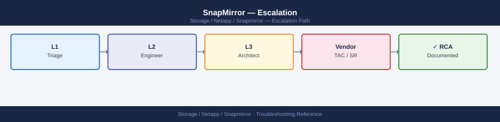
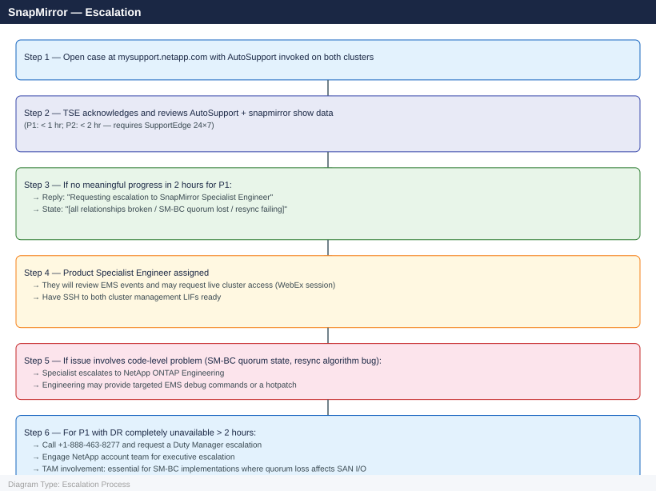

SnapMirror — Escalation¶

Before you begin¶
- Access required: Cluster admin SSH access to both source and destination ONTAP clusters; NetApp support account at mysupport.netapp.com with both cluster serial numbers registered and active support contracts
- Both clusters required: SnapMirror issues require data from both sides — NetApp will need AutoSupport, EMS logs, and the
snapmirror showoutput from both the source and destination cluster - Do NOT run
snapmirror breakwithout NetApp guidance — breaking a SnapMirror relationship in an error state (rather than a clean break) may leave the destination in an inconsistent state, requiring a full baseline resync - Do NOT delete snapshots on the destination — the common base snapshot is the only recovery point for the resync after the relationship is restored; deleting it forces a full baseline transfer
Pre-Escalation Self-Check¶
Run these on both clusters before opening the case.
| Check | Command | Expected result |
|---|---|---|
| Relationship health | snapmirror show -fields healthy |
All relationships show true |
| Relationship state | snapmirror show -fields state,status |
State: SnapMirrored; Status: Idle or Transferring |
| Lag time | snapmirror show -fields lag-time |
Below RPO target for each relationship |
| Last transfer success | snapmirror show -fields last-transfer-end-timestamp |
Recent timestamp (within RPO window) |
| Intercluster LIFs | network interface show -role intercluster |
All intercluster LIFs are up |
| Intercluster connectivity | network interface show -role intercluster -fields address then ping each peer LIF |
Reachable |
| Mediator (SM-BC only) | snapmirror mediator show |
Mediator reachable; quorum active |
| AutoSupport delivery | system node autosupport history show -node * -most-recent 3 |
Recent successful deliveries |
Step-by-Step Data Collection¶
1. Get ONTAP versions and cluster serial numbers (both clusters)¶
# Run on BOTH the source and destination clusters
# ONTAP version and node serial numbers
system node show -fields model,ontap-version,serial-number
# Cluster name
cluster identity show
Node Model ONTAP Version Serial Number
-------------- ---------------- -------------- ----------------
cluster1-01 A220-24G 9.12.1 4069611000123
cluster1-02 A220-24G 9.12.1 4069611000124
Cluster UUID: 1a2b3c4d-5e6f-7g8h-9i0j-1k2l3m4n5o6p
Cluster Name: cluster1-prod
(Running same commands on destination cluster)
Node Model ONTAP Version Serial Number
cluster2-01 A300-48G 9.13.0 4069622000456 cluster2-02 A300-48G 9.13.0 4069622000457
Cluster UUID: 9z8y7x6w-5v4u-3t2s-1r0q-9p8o7n6m5l4k Cluster Name: cluster2-dr
Common errors
Error: command failed: permission denied — Verify you have cluster admin credentials and are logged in with security login show.
Error: This command is not supported on this release of Data ONTAP — Confirm both clusters are running ONTAP 9.6 or later, as SnapMirror requires minimum version compatibility.
2. Invoke AutoSupport on both clusters¶
# Run on BOTH clusters before opening the case
# This sends full diagnostic data to NetApp and links it to your case
system node autosupport invoke \
-node * \
-type all \
-message "SnapMirror P1 incident: [brief description e.g. async relationship broken, DR unavailable]"
# Verify delivery (wait 5 minutes)
system node autosupport history show -node * -most-recent 5
# Look for "sent-successful" status
cluster1::> system node autosupport invoke \
-node * \
-type all \
-message "SnapMirror P1 incident: async relationship broken, DR unavailable"
cluster1-01: Autosupport message queued successfully.
cluster1-02: Autosupport message queued successfully.
cluster1::> system node autosupport history show -node * -most-recent 5
Node: cluster1-01
Index Timestamp Subject Status
----- -------------------------- -------------------------------- ----------------
5 11/22/2024 14:32:15 +00:00 AutoSupport WEEKLY REPORT sent-successful
4 11/21/2024 09:18:42 +00:00 SnapMirror P1 incident: async... sent-successful
3 11/20/2024 14:15:03 +00:00 AutoSupport DAILY REPORT sent-successful
2 11/19/2024 08:45:27 +00:00 AutoSupport DAILY REPORT sent-successful
1 11/18/2024 14:22:51 +00:00 AutoSupport DAILY REPORT sent-successful
Node: cluster1-02
Index Timestamp Subject Status
----- -------------------------- -------------------------------- ----------------
5 11/22/2024 14:33:02 +00:00 AutoSupport WEEKLY REPORT sent-successful
4 11/21/2024 09:19:15 +00:00 SnapMirror P1 incident: async... sent-successful
3 11/20/2024 14:16:08 +00:00 AutoSupport DAILY REPORT sent-successful
2 11/19/2024 08:46:12 +00:00 AutoSupport DAILY REPORT sent-successful
1 11/18/2024 14:23:44 +00:00 AutoSupport DAILY REPORT sent-successful
Common errors
Error: command not found: system node autosupport — Ensure you are connected to the NetApp cluster CLI (not the host shell); use ssh admin@<cluster-mgmt-ip> to access the ONTAP CLI.
cluster1::> Error: "sent-failed" status in autosupport history show — Verify network connectivity to NetApp support servers with network ping -destination support.netapp.com and check firewall rules allowing HTTPS outbound on port 443.
Error: This operation is not permitted: Insufficient privileges — Confirm your user account has admin or autosupport privileges; contact your cluster administrator to grant the required role.
3. Capture the SnapMirror relationship state¶
# Run on the DESTINATION cluster (most complete view)
# Full relationship details including error message
snapmirror show -expanded > /tmp/sm-show-$(date +%Y%m%d%H%M).txt
# Relationship status with lag and last transfer info
snapmirror show -fields state,status,lag-time,healthy,last-transfer-end-timestamp,unhealthy-reason
# Transfer history for affected relationships
snapmirror show-history -destination-path <svm>:<volume>
# Current active transfers
snapmirror show -fields state | grep "Transferring"
cluster1::> snapmirror show -expanded > /tmp/sm-show-20240215143022.txt
cluster1::> snapmirror show -fields state,status,lag-time,healthy,last-transfer-end-timestamp,unhealthy-reason
Source Destination State Status Lag-time Healthy Last-transfer-end-timestamp Unhealthy-reason
------ ----------- ----- ------ -------- ------- --------------------------- -----------------
svm1:vol_prod svm2:vol_prod Snapmirrored Idle 00:15:32 true 2/15/2024 14:15:22 -
svm1:vol_data svm2:vol_data Snapmirrored Idle 00:22:18 false 2/15/2024 13:52:10 Transfer aborted by user
svm3:vol_logs svm4:vol_logs Uninitialized - - false - Initialization not started
svm1:vol_archive svm2:vol_archive Snapmirrored Idle 00:08:45 true 2/15/2024 14:22:33 -
cluster1::> snapmirror show-history -destination-path svm2:vol_data
Source Destination Snapshot Start-time End-time Duration Transfer-size Result
------ ----------- -------- ---------- -------- -------- ------------- ------
svm1:vol_data svm2:vol_data sm_daily_001 2/15/2024 13:45:10 2/15/2024 13:52:10 00:07:00 2.3GB Success
svm1:vol_data svm2:vol_data sm_daily_002 2/14/2024 13:45:05 2/14/2024 14:12:33 00:27:28 8.7GB Success
svm1:vol_data svm2:vol_data sm_daily_003 2/13/2024 13:45:02 2/13/2024 13:58:45 00:13:43 4.1GB Success
cluster1::> snapmirror show -fields state | grep "Transferring"
svm1:vol_prod svm2:vol_prod Transferring
Common errors
Error: command failed: More than one match found for destination-path <svm>:<volume> — Specify the full source and destination paths in the format snapmirror show-history -destination-path svm:volume or use -source-path to disambiguate.
Error: There is no data to display — The relationship does not exist or has not completed initialization; verify the relationship exists with snapmirror show first.
4. Capture EMS events related to SnapMirror¶
# Run on BOTH clusters
# SnapMirror-specific EMS events (most relevant)
event log show -message-name snapmirror.* -time-range 24h
# All error events in the last 24 hours
event log show -severity error -time-range 24h
# For SM-BC: Mediator events
event log show -message-name smbc.* -time-range 24h
event log show -message-name mediator.* -time-range 24h
cluster1::> event log show -message-name snapmirror.* -time-range 24h
Time Node Severity Event
------------------ ---------------- ------------- ----------------------------------------
01/15/2025 14:32:18 cluster1-01 NOTICE snapmirror.update.end
01/15/2025 13:47:52 cluster1-02 NOTICE snapmirror.update.end
01/15/2025 12:15:33 cluster1-01 INFORMATIONAL snapmirror.initialize.end
01/15/2025 11:22:09 cluster1-02 WARNING snapmirror.lag.warning
01/15/2025 09:18:44 cluster1-01 NOTICE snapmirror.update.start
cluster1::> event log show -severity error -time-range 24h
Time Node Severity Event
------------------ ---------------- ------------- ----------------------------------------
01/15/2025 10:05:22 cluster1-02 ERROR snapmirror.update.failed
01/15/2025 08:33:15 cluster1-01 ERROR wafl.inconsistent.inode
cluster1::> event log show -message-name smbc.* -time-range 24h
Time Node Severity Event
------------------ ---------------- ------------- ----------------------------------------
01/15/2025 15:10:44 cluster1-01 NOTICE smbc.consistency.group.sync
01/15/2025 14:28:19 cluster1-02 INFORMATIONAL smbc.failover.completed
cluster1::> event log show -message-name mediator.* -time-range 24h
Time Node Severity Event
------------------ ---------------- ------------- ----------------------------------------
01/15/2025 13:55:07 cluster1-01 NOTICE mediator.connection.established
Common errors
Error: unexpected operator "-message-name" — Verify ONTAP version supports event log filtering syntax; use event log show | grep snapmirror as fallback on older releases.
Error: time-range "24h" is not valid — Replace with valid time range format such as -time-range 24h or use -start-time "01/14/2025 00:00:00" depending on ONTAP version.
No events found — Confirm SnapMirror relationships exist with snapmirror show and verify the time range overlaps with actual activity; check both source and destination cluster logs.
5. Check intercluster network and Mediator state¶
# Intercluster LIF states and addresses
network interface show -role intercluster
# Cluster peer status
cluster peer show -instance
# Connectivity test between clusters (run from both sides)
cluster peer ping -originating-node <node> -destination-cluster <peer-cluster-name>
# SM-BC Mediator status (if SM-BC is affected)
snapmirror mediator show
Vserver Name: cluster1
Logical Interface: cluster1_icl1
IP Address: 192.168.100.45
Netmask: 255.255.255.0
Status: up
Role: intercluster
Vserver Name: cluster1
Logical Interface: cluster1_icl2
IP Address: 192.168.100.46
Netmask: 255.255.255.0
Status: up
Role: intercluster
Cluster Peer UUID: 4a1b9c2d-5e8f-47a3-b6c1-9d2e3f4a5b6c
Cluster Peer Name: cluster2
Availability: available
Authentication Status: ok
Outbound Connections: healthy
Inbound Connections: healthy
IPspace Name: Default
Peer Addresses: 192.168.100.50, 192.168.100.51
Ping to cluster peer cluster2 succeeded.
Round-trip time: 2.341 ms
Mediator Address: 192.168.50.100
Mediator Status: connected
Quorum Status: true
Common errors
Error: command failed: Intercluster LIFs are not configured. — Create intercluster LIFs on both clusters using network interface create -vserver <cluster> -lif <name> -role intercluster -home-node <node> -home-port <port> -address <ip> -netmask <mask>.
Error: cluster peer ping failed: no route to host — Verify network connectivity between clusters and confirm firewall rules allow ICMP and port 11104 (TCP/UDP) for intercluster communication.
Error: Mediator status is 'unreachable' — Check mediator IP address configuration with snapmirror mediator show and verify network connectivity from both clusters to the mediator IP address.
6. Write the timeline¶
Source cluster: src-cluster-01 (AFF A400, ONTAP 9.13.1P5, SN: XXXXXXXX)
Destination cluster: dst-cluster-01 (FAS2820, ONTAP 9.13.1P5, SN: XXXXXXXX)
Relationship type: Async XDP (MirrorAllSnapshots policy)
Protected volumes: 12 volumes across 3 SVMs (SVM-ORACLE, SVM-SAP, SVM-SQLSERVER)
Replication link: 1 Gbps WAN MPLS between Site A and Site B
Issue first observed: 2026-06-15 10:00 UTC
Last successful transfer: 2026-06-15 08:00 UTC (RPO = 2 hours behind)
Changes in 24h before the issue:
- 08:00: Network maintenance on MPLS circuit; 15-minute outage
- 08:30: MPLS restored; SnapMirror transfers expected to resume
- 10:00: snapmirror show: all 12 relationships in "Broken-Off" state, error "network layer error"
AutoSupport invoked: Yes — src-cluster-01 at 10:05 UTC, dst-cluster-01 at 10:07 UTC
Steps already taken:
- Verified MPLS circuit is restored; inter-cluster LIFs can ping each other
- Did NOT run snapmirror resync (awaiting NetApp guidance on common snapshot state)
- Did NOT delete any destination snapshots
Blast radius: DR capability lost for 12 volumes; RPO currently 2 hours and growing; DBA alerted
How to Open the SR on mysupport.netapp.com¶
-
Go to mysupport.netapp.com and sign in with your NetApp SSO account.
-
Click Support → Cases & Claims → Create a New Case.
-
Under Product, choose ONTAP for FAS/AFF hardware.
-
Under Serial Number, enter the source cluster node serial number. Repeat for the destination cluster in the case description.
-
Under Priority, select:
- P1 — Critical: SM-BC quorum lost and host I/O is failing; all SnapMirror relationships are broken and DR is completely unavailable; a restore is failing during an active disaster recovery
- P2 — High: SnapMirror relationship broken with lag growing; resync failing after a planned maintenance window; SM-BC Mediator unreachable but I/O is continuing; RPO violation imminent
- P3 — Medium: A single relationship is broken; others are healthy; workaround available; no immediate DR risk
-
P4 — Low: How-to, SnapMirror design review, pre-migration planning, SVM-DR configuration question
-
In the Summary field: relationship type + symptom. Example:
ONTAP 9.13.1P5 — 12 Async XDP SnapMirror relationships Broken-Off after MPLS maintenance, DR unavailable, RPO 2h and growing. -
In the Description field, paste:
- ONTAP versions from both clusters (Step 1)
- AutoSupport invocation confirmation from both clusters (Step 2)
snapmirror showoutput for affected relationships (Step 3)- SnapMirror EMS events from both clusters (Step 4)
- Intercluster LIF and cluster peer state (Step 5)
-
The timeline (Step 6)
-
Under Attachments, upload any large files not captured by AutoSupport.
-
Click Submit. You receive a case number immediately.
-
P1 only: call NetApp support after submission:
- North America: +1-888-463-8277 (24×7 with SupportEdge 24×7)
- State "P1 — SnapMirror DR unavailable, [X] relationships broken, RPO growing, case XXXXXXXX" at the start of the call.
Escalation Path¶

What NOT to Do¶
| Do NOT do this | Why | What to do instead |
|---|---|---|
Run snapmirror break on a relationship in an error state |
Breaking in an error state may leave the destination volume in an inconsistent state; the relationship can only be restored via a full resync | Let NetApp confirm the destination state before any break; a controlled break should only happen in a clean state |
| Delete destination snapshots | The common base snapshot is the only anchor for the resync after the relationship is restored; deleting it forces a full baseline transfer that may take hours or days | Leave all destination snapshots intact; only delete after NetApp confirms all common snapshots are no longer needed |
Run snapmirror resync without NetApp confirmation of the common snapshot |
A resync without a common snapshot triggers a full baseline; on large volumes this can take days and extends the DR gap | Confirm with NetApp which common snapshot exists before attempting any resync |
| Upgrade ONTAP mid-incident | Adding a new ONTAP version to an already-broken replication state creates additional variables | Freeze all ONTAP upgrades until the SnapMirror relationship is restored and confirmed healthy |
| Delete and recreate the SnapMirror relationship | Recreating the relationship also destroys all existing destination data and requires a full baseline | Only delete and recreate on explicit NetApp instruction, after confirming that no resync from the existing state is possible |
| Modify intercluster LIF configurations during the incident | Changing LIF IPs or routing mid-incident changes the network state NetApp is diagnosing | Freeze all network changes on the intercluster network until NetApp confirms the root cause |
Useful Commands for Case Updates¶
# Run on DESTINATION cluster — paste into every case update
# Relationship health and lag
snapmirror show -fields state,status,lag-time,healthy,unhealthy-reason
# Active SnapMirror EMS events (last 2 hours)
event log show -message-name snapmirror.* -time-range 2h
# Intercluster LIF states
network interface show -role intercluster
# Cluster peer connectivity
cluster peer show
# Mediator status (SM-BC only)
snapmirror mediator show
Destination:svm1 Source:svm2 State:snapmirrored Status:idle Lag-time:00:00:00 Healthy:true
Destination:svm3 Source:svm4 State:snapmirrored Status:transferring Lag-time:00:15:32 Healthy:false Unhealthy-reason:transfer-in-progress
Time Severity Message
2024-01-15 14:32:18 NOTICE snapmirror.transfer.end: SnapMirror transfer completed for "svm1:vol_data"
2024-01-15 14:28:45 WARNING snapmirror.lag.threshold: Replication lag exceeded threshold for relationship "svm2:vol_backup"
2024-01-15 14:15:22 ERROR snapmirror.transfer.failed: Transfer failed for "svm3:vol_critical" - Network timeout
Vserver LIF Status Role
cluster1 cluster1_ic_lif_01 up intercluster
cluster1 cluster1_ic_lif_02 up intercluster
cluster2 cluster2_ic_lif_01 down intercluster
Peer Cluster Name Peer Address Status
cluster2-prod 192.168.1.50 peered
cluster3-dr 192.168.1.75 peered
Mediator Address Mediator Status Quorum Status
192.168.100.10 connected true
...
Common errors
snapmirror show: command not found — Ensure you are running commands on the destination ONTAP cluster, not a Linux host; SSH into the cluster management IP first.
Error: entry doesn't have a value for this field "lag-time" — Remove the lag-time field for asynchronous SnapMirror relationships that don't report lag; use snapmirror show -fields state,status,healthy instead.
cluster peer show: command not found — Verify cluster peer relationships exist before troubleshooting; run cluster peer show only if at least one peer cluster is configured.
Support SLA Reference¶
| Priority | Definition | Initial Response SLA |
|---|---|---|
| P1 — Critical | SM-BC quorum lost; all DR relationships broken; restore failing; DR unavailable | < 1 hour (24×7 — SupportEdge 24×7 required) |
| P2 — High | Relationship broken with growing lag; resync failing; RPO at risk | < 2 hours (24×7 — SupportEdge 24×7 required) |
| P3 — Medium | Single relationship broken; others healthy; workaround available | < 4 hours (business hours) |
| P4 — Low | How-to, design review, migration planning | Next business day |
See also¶
Verify resolution¶
- Run
snapmirror show -fields healthyon the destination cluster and confirm all relationships showtrue - Run
snapmirror show -fields lag-timeand confirm lag is within the RPO target for each relationship - Run
snapmirror show -fields last-transfer-end-timestampand confirm recent successful transfers - Run
event log show -message-name snapmirror.* -time-range 2hon both clusters and confirm no new error events - Run
cluster peer showand confirm all cluster peers are reachable - For SM-BC: run
snapmirror mediator showand confirm the Mediator is reachable and quorum is active - Invoke a final AutoSupport tied to the case:
system node autosupport invoke -node * -type all -message "case XXXXXXXX resolved" - Monitor the relationship lag for 30 minutes to confirm transfers are completing within the RPO target